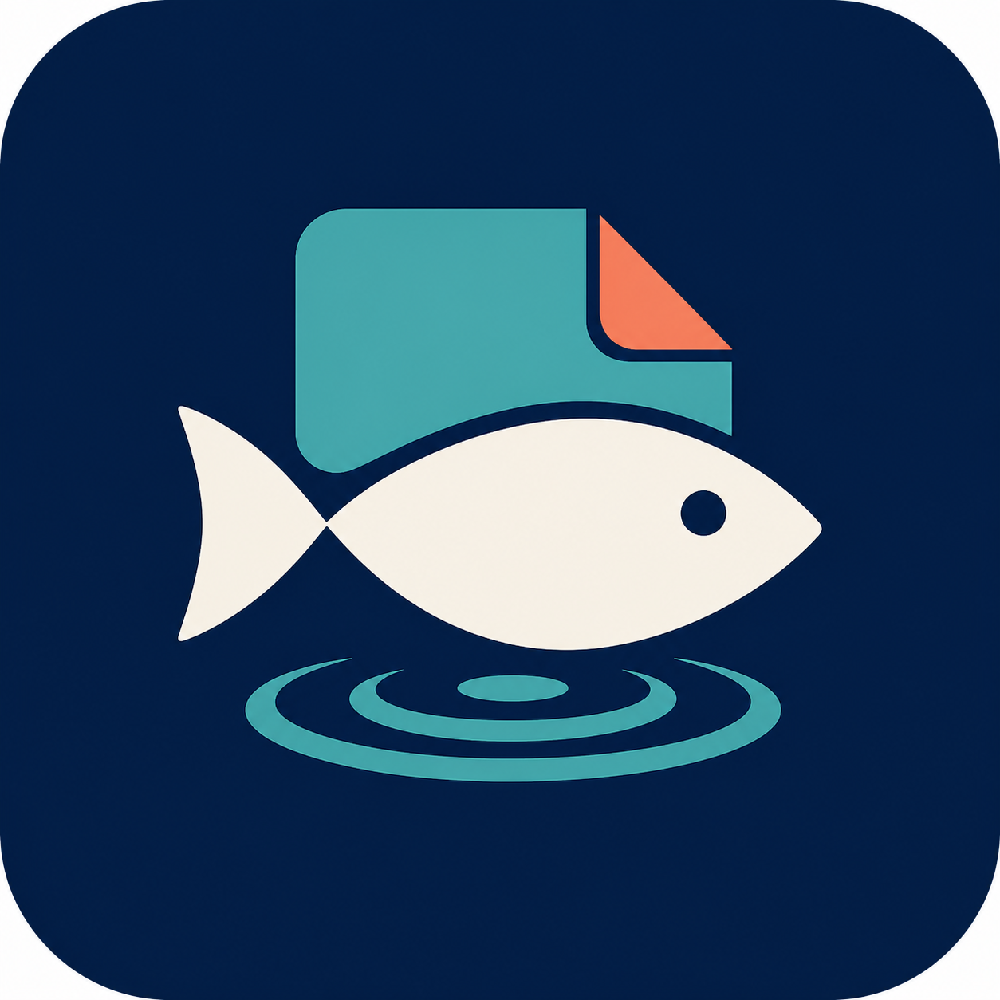

Honest trip history
Keep the day even when nothing bites. Add catches with your own species, size, outcome, bait or lure, technique and notes.
Log catches and zero-catch trips, remember private spots, look after tackle and learn from the record you build—without an account, subscription or social feed.

Keep the day even when nothing bites. Add catches with your own species, size, outcome, bait or lure, technique and notes.
Create private spot labels and optionally type coordinates yourself. CatchFolio does not request device location or publish spots.
Track rods, reels, line, lures and other gear with maintenance dates and practical notes.
Search and edit local history, review insights, export CSV or readable text, and make a validated JSON backup.
CatchFolio does not provide navigation, forecasts, public spots, species identification, regulations, legal bag or size limits, or water-safety advice. Check official local sources.
Every feature is available without a paid download, in-app purchase, subscription, trial or paywall. CatchFolio is supported by advertising. Optional rewarded advertising changes only a temporary decorative recap theme and never unlocks a core feature.
Get support or read the privacy policy.